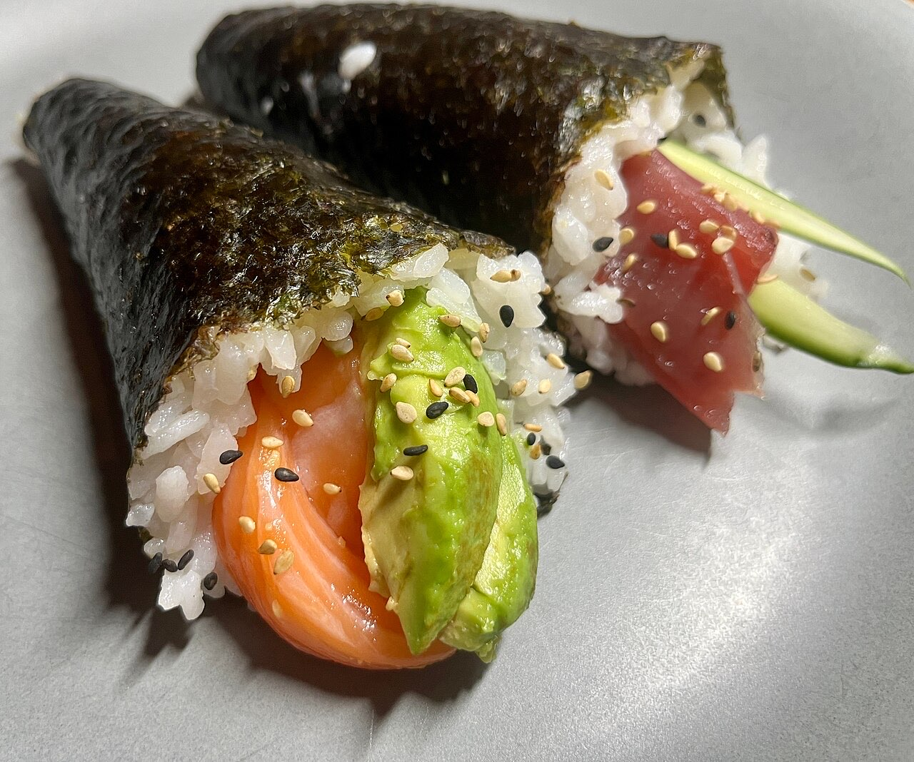
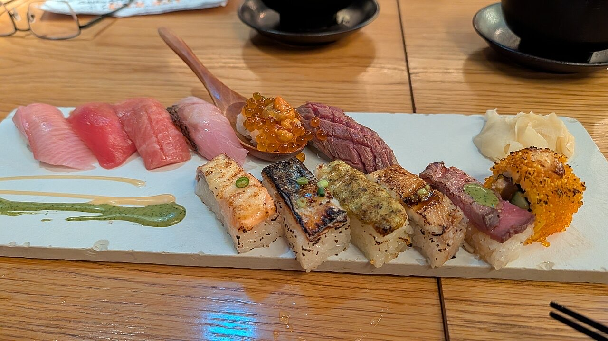

Fotografias ilustrativas — no site final usamos as vossas.
Restaurante / sushi · Guimarães
Sushi e grelhados, à moda da casa
Temaki de salmão e outros sabores para partilhar.
Para quem prefere carne, há picanha.
Por QR code, sem esperar pela equipa.
O Kasablanca é um restaurante e sushi bar na Rua Rodrigues de Covas, em Guimarães. Venha provar sushi com amigos ou um grelhado para variar.


Fotografias ilustrativas — no site final usamos as vossas.
Novo · Pedidos por QR code
Menos espera nas horas de ponta, menos enganos nos pedidos e a equipa livre para servir.
Pedido de reserva
Escolha o dia e a hora — o pedido chega por WhatsApp e confirmamos logo.
↑ Assim chegaria a mensagem ao vosso WhatsApp. (Nesta demonstração nada é enviado.)
Onde estamos
Proposta para Kasablanca Restaurante Sushi Bar
Esta página foi feita de propósito para Kasablanca Restaurante Sushi Bar por João Machado, programador web aqui de Guimarães. Inclui:
Eu trato do alojamento e da manutenção. Sem compromisso.